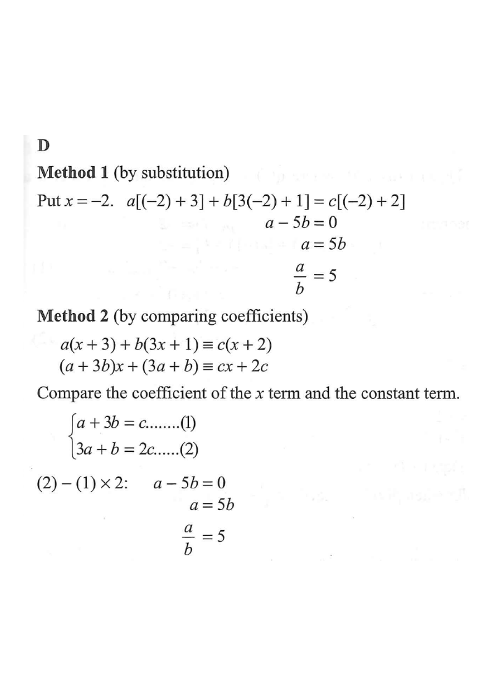

Step 1 — Gather the given identity
[2021MC#6] If $a$, $b$ and $c$ are non-zero constants such that $$a(x+3)+b(3x+1)\equiv c(x+2),$$ then $a:b=$

$$a(x+3)+b(3x+1)\equiv c(x+2)$$
Both sides are linear in $x$,
and “$\equiv$” means they are equal for all real $x$.
At $x=-2$ the factor $(x+2)$ becomes $0$, so the RHS vanishes:
\begin{aligned} a(-2+3)+b(3(-2)+1)&
=c(-2+2)\\ a(1)+b(-5)&
=0\end{aligned}
\[ a-5b=0 \]
Choosing $x=-2$ makes $c$ disappear — that is the trick of substitution.
\[ a=5b \quad\Longrightarrow\quad \frac{a}{b}=5 \quad\Longrightarrow\quad a:b=5:1 \]
Since $b\neq 0$, dividing is valid.
Note $5:1$, not $1:5$.
\[ a(x+3)+b(3x+1)=(a+3b)x+(3a+b) \]
Matching with $cx+2c$:
\begin{cases} a+3b = c &\quad(1)\\[2pt] 3a+b = 2c &\quad(2)\end{cases}
Coefficients of $x$ must agree; constant terms must agree — for an identity.
Compute $(2)-(1)\times 2$:
\begin{aligned}(3a+b)-2(a+3b)&
=2c-2c\\ 3a+b-2a-6b&
=0\\ a-5b&
=0\end{aligned}
\[ a=5b \quad\Longrightarrow\quad \frac{a}{b}=5 \]
Same result from a completely different route — a good consistency check.
\[ \frac{a}{b}=5 \quad\Longrightarrow\quad a:b=5:1 \]
“$a:b$” means the value of $a$ first.
So the answer is option D.
Question. If \(a\), \(b\) and \(c\) are non-zero constants such that \(a(x+5)+b(3x+2)\equiv c(x+1)\), then \(a:b=\)
A. \(1:3\) B. \(1:4\) C. \(4:1\) D. \(5:1\) (1 mark)